メモリに乗り切るか
モデルサイズパラメータ数をメモリ容量へ変換する
モデルサイズは、モデルの重みがメモリに収まるかを判断するための最初の指標であり、ローカル推論では演算性能より先に確認すべき値である。「32B」「70B」「753B」のBは10億パラメータを意味し、重みだけの理論容量は パラメータ数 × 1パラメータ当たりのbit数 ÷ 8 で求められる。パラメータ数をB、容量を10進GBで表すと、重み容量[GB] ≒ パラメータ数[B] × bit数 ÷ 8 となる。
この式による理論値では、32Bモデルは16bitで64GB、8bitで32GB、4bitで16GBになる。70Bモデルは16bitで140GB、8bitで70GB、4bitで35GBである。GLM-5.2のような753Bモデルは、16bitで1,506GB、8bitで753GB、4bitでも376.5GBになる。これらは「重みそのもの」だけの容量であり、推論サーバー全体の必要量ではない。
| 規模 | BF16/FP16 | FP8/INT8 | INT4 |
|---|---|---|---|
| 32B | 64 GB | 32 GB | 16 GB |
| 70B | 140 GB | 70 GB | 35 GB |
| 753B (GLM-5.2) | 1,506 GB | 753 GB | 376.5 GB |
実際のVRAM使用量には、重みに加えてKVキャッシュ、Activation、CUDAや推論エンジンのWorkspace、GPU間通信バッファ、量子化ScaleやMetadata、メモリ断片化への余裕が加わる。そのため、70B INT4の理論重み容量が35GBだからといって、40GB GPUへ安全に載せられるとは限らない。容量設計では、モデルファイルのサイズではなく、対象Runtimeを起動して所定のコンテキストと同時実行数を処理したときのピーク使用量を見る必要がある。
また、LLMシステム内の「メモリ」は一種類ではない。モデルの重みは学習済み知識、コンテキストは現在の作業情報、KVキャッシュは生成中の計算メモ、Prompt Cacheは共通プロンプトの再利用、長期メモリはDBやファイルに保存した会話・案件情報である。会話を記憶しているように見えても、通常はモデルの重みが会話ごとに書き換わっているわけではない。
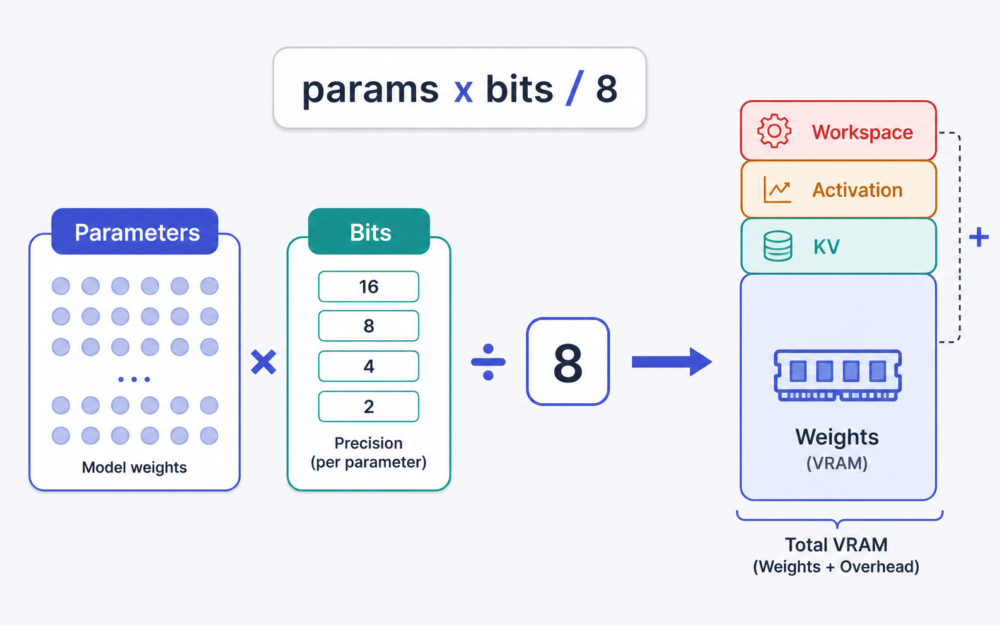
4・8・16bitなぜ複数の表現精度があるのか
4bit、8bit、16bitという複数の表現がある理由は、数値表現の精度と、容量・帯域・実行可能なハードウェアの間にトレードオフがあるためである。bit数を半分にすると、重みの理論容量も半分になり、各トークン生成時にメモリから読み出す重みの量も減る。
16bitのBF16やFP16は、1パラメータ当たり2bytesを使う。8bitは1byte、4bitは0.5byte相当である。このため、同じ32Bモデルでも16bitなら64GB、8bitなら32GB、4bitなら16GBとなる。容量を減らせば、より小さなGPUへモデルを載せられるだけでなく、メモリ帯域が同じなら、重み読み出しに必要な時間の理論上限も短くなる。
ただし、量子化はモデルのすべてを同じbit数にするという意味ではない。モデル重みがINT4でも、KVキャッシュをBF16で保持する構成は一般に成立する。Qwen3-32Bの例では、重みを4bit化して理論16GBにしても、BF16のKVキャッシュは32Kトークンで1シーケンス当たり約8GiBを消費する。モデルを4bit化しただけでは、長いコンテキストや多数の同時ユーザーに必要なKV容量は減らない。
また、4bitにすれば必ず16bitの4倍速くなるわけでもない。量子化解除、Scaleの読み出し、専用Kernelの効率、Tensor Alignment、Scheduler、演算器の利用率が加わるためである。bit数は容量と帯域上限を決める重要な変数だが、実測速度を単独で決定する値ではない。
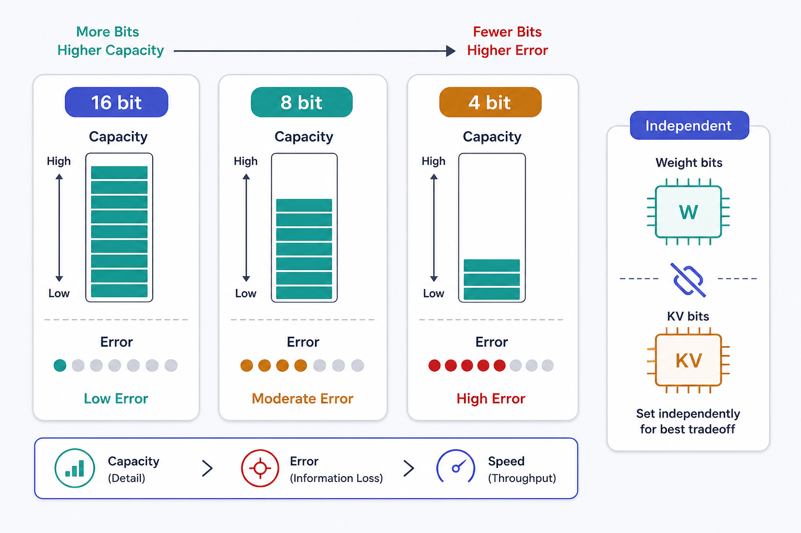
量子化の精度影響精度ベンチマークを読む条件
量子化の精度影響は、容量削減の代償としてタスク成功率がどれだけ変化するかを確認する話であり、モデルを「載せられる」ことと「業務品質を満たす」ことを分けるために重要である。少ないbit数へ変換すると、元の重みを限られた数値表現へ写像するため近似誤差が生じるが、その影響はモデル、量子化方式、層、タスク、Runtimeによって異なる。
添付資料には、特定モデルについてBF16、FP8、INT8、INT4の精度スコアを直接比較した数値ベンチマークは含まれていない。そのため、「4bitでは精度が何ポイント低下する」といった値を一律に置くことはできない。ここで数値を補うと、量子化方式や評価タスクを無視した捏造になる。
Dense と MoE総パラメータとActive parametersを分ける
DenseとMoEの違いは、モデルを格納するための容量と、1トークンを計算するための演算量が一致するかどうかにあり、大規模モデルの構成を誤解しないために重要である。Denseモデルでは、原則として各トークンの計算に全パラメータが関与する。このため、総パラメータ数は重み容量とトークン当たりの主要な演算量の双方に強く関係する。
MoEでは、多数のExpertをメモリへ常駐させつつ、各トークンではその一部だけを選択する。したがって、総パラメータ数は主に必要メモリ容量を表し、Active parametersは主に1トークン当たりの演算量を表す。Active parametersが小さくても、選ばれなかったExpertを含む全重みを保持しなければならない。
GLM-5.2は公式設定上753Bの総パラメータを持ち、256個のRouted Expertから1トークン当たり8個を選択し、Shared Expertを1個持つ。1トークン当たりのActive parametersは約40Bとする二次情報・推定があるが、共有ExpertやDense層が存在するため、753B × 8 ÷ 256 だけでは求められない。
この構造では、計算量が40B級に近く見えても、モデル格納には753B分の重みが必要になる。さらに、複数GPUへExpertを分散すると、Expert ParallelのAll-to-All通信、Routing、ExpertごとのBatchの偏り、小さな行列演算、キャッシュミスが発生する。そのため、MoE 753B・Active 40BをDense 40Bと同じ容量・速度として扱うことはできない。
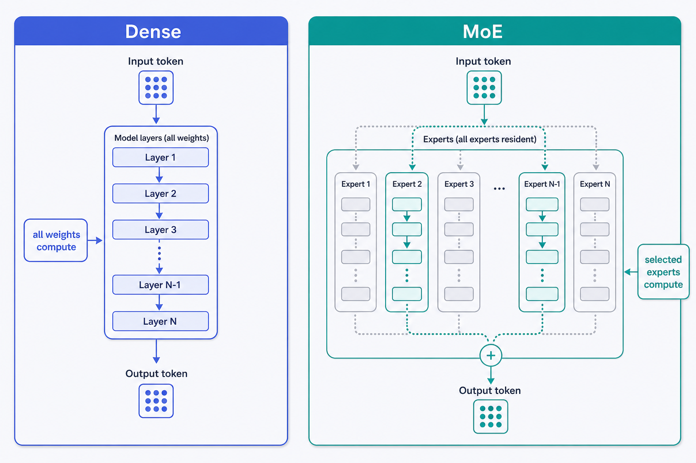
コンテキストサイズ一回の推論で参照する作業領域
コンテキストサイズは、モデルが一回の推論で参照できるトークン総数を表し、入力、出力、Reasoning、ツール結果の予算を決めるために重要である。コンテキストには、System Prompt、Tool定義、過去の会話、会話要約、RAGで取得した文書、長期メモリ、現在の入力、Tool実行結果、生成出力、モデルによってはReasoning tokensが含まれる。
したがって、公称コンテキストが40,960トークンだからといって、入力だけを40,960トークン入れられるわけではない。出力とReasoningに必要な領域を残す必要がある。Productionでは、公称値であるAdvertised context、推論サーバーに設定するServing context、アプリケーションが利用者へ許可するApplication contextを分ける。モデルが1M対応でも、サーバーでは128Kまで、通常ユーザーには32Kまでといった制御が可能である。この分離がないと、一つの長大なリクエストがKV領域とPrefill時間を占有し、ほかの利用者を圧迫する。
GLM-5.2は公式設定で1,048,576トークン、すなわち1Mコンテキストを持つ。一方、Qwen3-32Bの設定値は40,960トークンである。ただし、最大値が大きいことは、常に最大値まで情報を詰めるべきこと、100人が同時に最大値を使えること、ウィンドウ内のすべての位置から同じ精度で情報を利用できることを意味しない。
128Kと1Mコンテキスト長がKVメモリへ与える影響
128Kと1Mの違いは、単なる入力上限ではなく、リクエスト中に保持するKVキャッシュの容量と読み出し量の違いであり、同時実行数と生成速度へ直接影響する。KVキャッシュは現在のシーケンス長に比例するため、コンテキストを8倍にすると、同じKV形式ならKV容量もおおむね8倍になる。
GLM-5.2は通常のGQAではなく、圧縮されたMLA KVキャッシュを利用する。添付資料の概算では、78層、latent次元576、BF16の2bytesを前提とすると、MLAコア部分は 78 × 576 × 2 = 89,856bytes/token、約87.75KiB/tokenになる。
| Context | MLAコアKV概算（1 Seq） |
|---|---|
| 32K | 約2.74 GiB |
| 128K | 約10.97 GiB |
| 1,048,576 | 約87.75 GiB |
概算 MLAコアのみ。実環境ではDSA Indexer、MTP/Speculative、Block Table、Allocator Metadata、Runtime Workspace、断片化が加わる。
ここでの約87.75GiBはモデル重みではなく、1ユーザーの1シーケンスに対応するMLAコアKVだけの概算である。MLAでKVを大幅に圧縮していても、1Mコンテキストを一人へ提供するだけで、大容量GPU一枚分に近い追加領域を消費する可能性がある。長いコンテキストでは容量だけでなくDecode速度も低下する。新しい1トークンを生成するたびに参照する過去KVが増えるため、帯域上の下限時間は （重み読み出し + KV読み出し）÷ 実効メモリ帯域 に近づく。1M対応は機能上の上限であり、日常的な推奨入力長を意味しない。
最大ctx常時起動Serving上限とApplication上限を分ける
最大コンテキストで推論サーバーを常時起動すべきかという問いは、機能上の最大値と、通常トラフィックの効率をどう両立するかという運用設計の問題である。結論として、公称1Mだからすべてのリクエストへ1Mを許可する構成は、容量、遅延、品質、同時実行数の面で非効率になりやすい。
KVキャッシュの式は現在のシーケンス長に比例するため、Serving contextを1Mに設定しただけで、すべての短いリクエストが必ず1M分のKVを消費するわけではない。しかし、1Mリクエストを受理する以上、Schedulerはその成長を許容できる余裕を持たなければならず、最悪ケースでは一つのリクエストがGLM-5.2のMLAコアKVだけで約87.75GiBを使用し得る。
また、入力が長くなるとPrefillが遅くなり、生成中に読むKVが増え、入力トークンに比例するコストも増える。関連性の低い履歴まで投入すると、モデルが必要な情報を見つけにくくなるContext rotも問題になる。最大値を広げることと、有効な情報密度を高めることは別の最適化である。実装では、Advertised contextはモデル能力として保持し、Serving contextはGPU構成とRuntimeに応じて設定し、Application contextは用途別に制限する。
KVキャッシュ容量式と同時実行数
KVキャッシュは、過去トークンのAttention用KeyとValueを再計算しないためのGPU上の作業メモであり、長いコンテキストと同時利用数がVRAMへ与える影響を理解する中心概念である。モデル重みは複数ユーザーで共有できるが、KVキャッシュはユーザー、会話、生成中シーケンスごとに必要になる。
Qwen3-32Bは64層、KV Head数8、Head次元128である。KVをBF16の2bytesと仮定すると、1トークン当たり 2 × 64 × 8 × 128 × 2 = 262,144bytes、すなわち256KiBとなる。この条件では、8Kトークンで約2GiB、32Kで約8GiB、40Kで約10GiBを1シーケンスが消費する。FP8 KVなら、それぞれ約1GiB、4GiB、5GiBとなる。
| 同時Seq × 平均長 | BF16 KV合計 |
|---|---|
| 3 × 8K | 約6 GiB |
| 10 × 8K | 約20 GiB |
| 10 × 32K | 約80 GiB |
| 20 × 32K | 約160 GiB |
例えば96GB GPUへFP8の32Bモデルを置き、重みを約32GB、32KのBF16 KVを1本当たり約8GiBとすると、単純算術でも同時シーケンスは7本程度しか入らない。実際にはWorkspaceとRuntime領域が必要なため、上限はさらに少なくなる。チームに10人いるかどうかではなく、ピーク時に何本のシーケンスが生成中で、合計何トークンが生存しているかが重要になる。
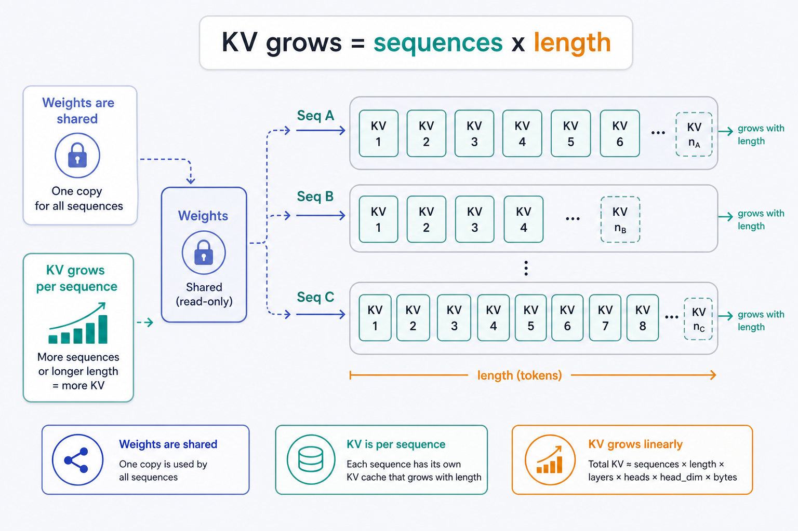
- データに依存しない直交回転と最適スカラー量子化を使います。
- 残差補正も組み合わせ、微調整なしで低bit化します。
- 目的はモデルの知能を上げることではありません。
- 長文脈の記憶量とattention処理を、精度を保ち実用範囲に収めます。
参考: arXiv:2504.19874 / Google Research blog / Qiita
tok/sec その1
クローズドモデルの速度tok/secを速度感へ変換する
クローズドモデルの速度を評価するには、ベンダー名だけでなく、最初の応答までの時間と、その後の生成速度を分ける必要がある。添付資料にはクローズドモデルごとの統一条件による実測比較値がないため、特定ベンダーを何tok/secと断定せず、速度を人間の待ち時間へ変換して読む。
| tok/sec | 平均ITL | 600トークン生成 |
|---|---|---|
| 7 | 約143ms | 約85.6秒 |
| 25 | 40ms | 約24秒 |
| 50 | 20ms | 約12秒 |
| 100 | 10ms | 約6秒 |
| 1,000 | 1ms | 約0.6秒 |
600トークンを生成する単純例では、7tok/secならDecodeだけで約85.6秒、50tok/secなら約12秒、1,000tok/secなら約0.6秒となる。これらは速度帯を理解するための計算例であり、特定のクローズドモデルの測定結果ではない。複数ユーザー全体の性能はAggregate tok/secで測る。10人が同時に各25tok/secで生成できればAggregate throughputは250tok/secだが、サーバー全体が250tok/secでも全ユーザーへ常に25tok/secずつ割り当てられるとは限らない。Queue、Continuous Batching、長いコンテキストの混在によって個別速度は変動する。
prompt と 生成PrefillとDecodeを分けて測る
Prompt部分と生成部分は異なる処理であり、長い入力に強いシステムと、長い回答を高速に出せるシステムを分けて評価するために重要である。Promptをモデルへ読み込んで最初のトークンを準備する処理がPrefillで、その後に1トークンずつ自己回帰的に生成する処理がDecodeである。
Prefillの長さは主にTTFTへ現れる。System Prompt、Tool定義、履歴、RAG文書、現在の入力が増えるほど、最初のトークンが返るまでの処理量が増える。共通のPrefixを再利用できるPrompt Cacheは、この部分の計算を削減するための仕組みである。Decodeは、各ステップで重みと現在までのKVを読みながら次の1トークンを生成する。Batch 1ではメモリ帯域に制約されやすく、短いコンテキストなら tok/sec上限 ≈ 実効メモリ帯域 ÷ 重み容量、長いコンテキストなら tok/sec上限 ≈ 実効メモリ帯域 ÷（重み読み出し + KV読み出し） が粗いRooflineになる。
したがって、Promptが100Kで出力が100トークンの処理と、Promptが1Kで出力が10Kトークンの処理では、同じ総トークン数でもボトルネックが異なる。前者はPrefillとKV初期化、後者は長時間のDecodeとシーケンス保持が支配的になる。API比較では、Time to First Token、Time to First Visible Token、Prefill tokens/sec、全生成を含むDecode tok/sec、Visible部分だけのtok/secを分ける必要がある。特にReasoningモデルでは、最初の内部トークンが生成された時刻と、最初の表示文字が返った時刻が一致しない。
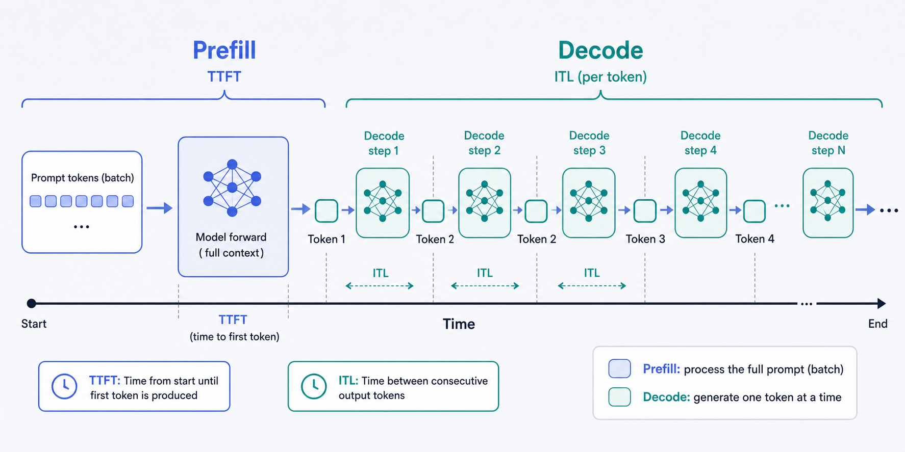
メモリ速度
- batch 1は演算密度が低く、Rooflineでも同じ傾向です。
- H100は約1,979 TFLOPSでも、帯域3.35 TB/sが先に飽和します。
- 毎回重みと全KVを読み、GLM-5.2の1M×10例では約96%がKVです。
- 量子化、KVのFP8化・MLA、Speculative Decoding、Prefix Cacheが有効です。
参考: Qiita「なぜLLMは遅いのか？ KV CacheとSpeculative Decodingの数学的理解」
バス幅とメモリ速度メモリ帯域の計算方法
バス幅とメモリ転送速度は、GPUが1秒間に何GBのデータを読み書きできるかを決め、Batch 1のLLM Decode性能を概算する基礎になる。理論メモリ帯域は、メモリ転送速度 × メモリバス幅 ÷ 8 で計算できる。
バス幅だけが広くても、メモリの転送速度が低ければ帯域は上がらない。逆に、高速なメモリでもバス幅が狭ければ総帯域は制限される。また、ここで求める値は理論帯域であり、LLM Runtimeが実際に利用できる実効帯域ではない。実際のトークン時間は、max（FLOPs/token ÷ 実効FLOP/s、読み書きbytes/token ÷ 実効メモリ帯域、GPU間通信時間） に、Kernel起動、Scheduler、量子化解除、Runtime overheadを加えた値で決まる。そのため、カタログ上の帯域は速度の天井を説明するが、実測値そのものではない。
モデルサイズ・ctx・KV帯域と容量に同時に効く三要素
モデルサイズ、コンテキスト長、KVキャッシュは、GPUメモリ容量と1トークン当たりの読み出し量の双方へ影響するため、別々ではなく一つの式で考える必要がある。短いコンテキストのDenseモデルでは重み読み出しが支配的だが、コンテキストが長くなるほどKV読み出しを無視できなくなる。
容量側では、総VRAM ≳ モデル重み + 生存中の全KV + Workspace + Runtime領域 + 運用余裕 が必要になる。モデル重みは全ユーザーで共有できる一方、KVは同時シーケンス数と各シーケンス長の積に比例する。帯域側では、各トークン生成時の最低読み出し量が、短いコンテキストでは主にモデル重み、長いコンテキストではモデル重みとKVの和になる。32B Q4の理論重みが16GBでも、Qwen3-32BのBF16 KVは8Kで約2GiB、32Kで約8GiBになる。このとき、帯域上の分母は16GBから約18GB、約24GBへ増える。
同じモデルでも、短いチャットと長文Agentでtok/secが異なるのはこのためである。さらにReasoningを生成すると、そのReasoning tokensもシーケンスへ追加され、後続トークンが読むKVと、リクエスト中のピークKVを増加させる。MoEでは、容量は全Expertの総重みで決まり、トークン当たりの主要な重み読み出しはShared部分とActive Expertで決まる。ただし、GPU間通信とRoutingが追加されるため、Dense向けの 帯域 ÷ 総重み容量 をそのまま適用できない。
tok/sec その2
帯域 × モデルサイズ × bit帯域Rooflineとしてのtok/sec
メモリ速度、モデルサイズ、bit数の関係は、モデルを載せられるかだけでなく、Batch 1で何tok/secまで到達し得るかを概算するために重要である。短いコンテキストのDenseモデルでは、理論上の上限を メモリ帯域[GB/s] ÷ モデル重み容量[GB] で近似できる。
Q4の理論重み容量は、8B Denseで4GB、32Bで16GB、70Bで35GBである。これはScale、Zero Point、Alignment、Embedding、Runtimeなどを除いた値であり、実ファイルやVRAM使用量はさらに大きくなる。これらは実測予想ではなく、Dense、Batch 1、短いコンテキスト、Q4重み、KV無視、Kernel・演算・通信オーバーヘッド無視という条件の理論天井である。実測値を示す場合は、「理論tok/sec＝帯域から求めたRoofline」「実測tok/sec＝Runtimeとモデルを含むBenchmark」と明確に区別する。
長いコンテキストでは、分母へKV読み出し量を加える。GLM-5.2のようなMoEに対して、総Q4重量376.5GBをそのまま分母へ置くのは不適切である。各トークンで全Expertを読み出すわけではないため、MoEの概算は 帯域 ÷（Shared Weight + Active Expert Weight + KV + Routing/通信） と考える必要がある。
ハードウェア比較RTX 5090 / RTX 3090 / DGX Spark / Mac Studio / A100
各ハードウェアの比較では、容量と帯域を別の軸で見ることが重要である。容量はモデルやKVを置けるか、帯域は1トークンをどれだけ速く読めるかを決める。
| HW | 容量 | 帯域 | 8B Q4 | 32B Q4 | 70B Q4 |
|---|---|---|---|---|---|
| RTX 5090 | 32 GB | 1,792 | 448 | 112 | 容量不足 |
| RTX 3090 | 24 GB | 936 | 234 | 58.5 | 容量不足 |
| A100 80GB PCIe | 80 GB | 1,935 | — | — | — |
| A100 80GB SXM | 80 GB | 2,039 | 510 | 127 | 58.3 |
| DGX Spark | 128 GB | 273 | 68.3 | 17.1 | 7.8 |
| Mac Studio M3 Ultra | 512 GB | 819 | 205 | 51.2 | 23.4 |
理論値 Dense・Batch1・Q4・KV無視の帯域Roofline。tok/s単位。
この比較から、RTX 5090は容量が小さい一方で、収まるモデルは高速に読めることが分かる。DGX Sparkは70B Q4を収容できる容量を持つ一方、273GB/sという帯域がBatch 1 Decodeの制約になり得る。Mac Studio M3 Ultraは非常に大きな統合メモリを利用できるが、帯域はA100 80GB SXMの819対2,039GB/sである。A100は80GBの容量と約2TB/sの帯域を両立している。
| 32B Q4 | KV無視 | 8K | 32K |
|---|---|---|---|
| RTX 5090 | 112 | 98.7 | 72.9 |
| RTX 3090 | 58.5 | 51.6 | 38.1 (OOM) |
| A100 80GB SXM | 127 | 112 | 82.9 |
| DGX Spark | 17.1 | 15.0 | 11.1 |
| Mac Studio M3 Ultra | 51.2 | 45.1 | 33.3 |
RTX 3090は32Kで重みとKVが約24.6GBとなり24GBを超えるためOOM。RTX 5090でも32Kでは約24.6GBで残り約7GBしかなく、Runtime領域や複数シーケンスの余裕は小さい。理論値と実測値の差も無視できない。添付資料の2026年5月のBatch 1 Decode研究では、7〜8B BF16モデルでL4が解析上のメモリ限界の約81%に達した一方、H100は約27%だった。H100ではCUDA Graphsだけで約1.26倍改善しており、高速GPUほどKernel起動などの固定オーバーヘッドが相対的に大きくなる。INT4化の速度改善も量子化Kernelによって大きく異なり、単純な4倍にはならない。
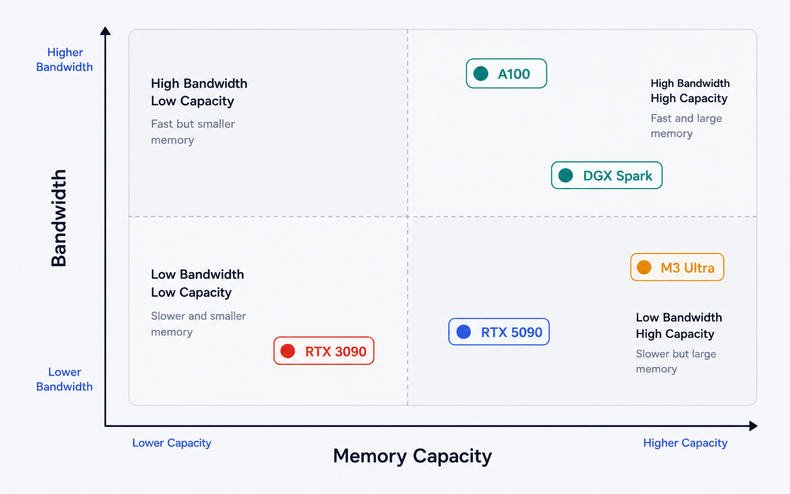
ローカルAIのテンプレート
ステートレス推論 + 外部Memory Service標準構成
ローカルAIの基本テンプレートは、モデルサーバーをステートレスに保ち、会話履歴、長期記憶、タスク状態を外部サービスへ分離する構成であり、スケール、監査、モデル交換を容易にする。ここでいうローカルAIには、個人PCだけでなく、自社のAWS、GCP、Azureアカウント内でセルフホストするモデルも含む。
入口にはConversation APIまたはAgent APIを置く。この層がtenant、user、project、sessionを識別し、認証、レート制限、タスク状態、モデル選択を担当する。モデルサーバーへ直接会話履歴を保存させるのではなく、Raw Event Store、Session Store、Structured Memory、Semantic Index、Artifact Storeへデータを分けて保存する。
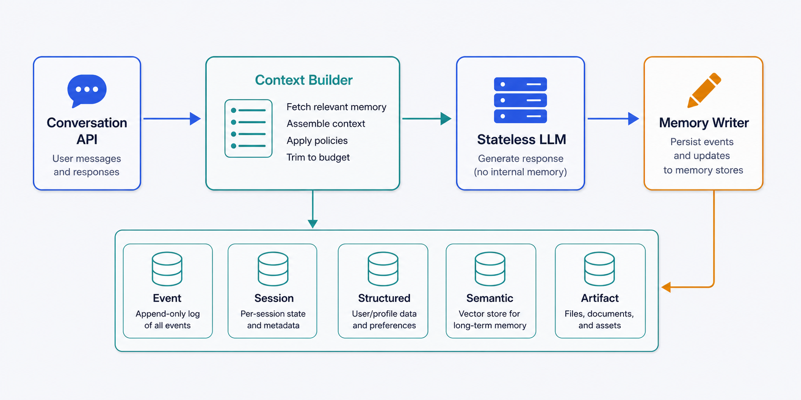
Raw Event Storeには、ユーザー入力、モデル出力、Tool call、Tool resultを改変せず記録する。Session Storeには、現在の作業段階、未完了のTool call、短期TTLを持つ一時状態を置く。Structured Memoryにはユーザー設定、決定事項、案件情報、期限、権限などを保存する。Semantic Indexは類似する過去事例や文書候補を検索するために使い、Artifact Storeにはコード、文書、表、画像、分析結果を保存する。
推論の直前にはContext Builderが必要になる。Context BuilderはSystem Prompt、最新Nターン、Rolling Summary、関連するStructured Memory、Semantic Retrieval結果、現在のTask Stateを選び、今回のコンテキストを組み立てる。全履歴を無条件に入れるのではなく、現在の判断に必要な情報だけを配置する。組み立てたコンテキストは、vLLM、SGLang、TensorRT-LLMなどのStateless LLM Serverへ送る。モデルは出力またはTool callを返すが、長期保存の正本を直接更新しない。
推論後はMemory WriterまたはExtractorが、将来必要な情報を抽出する。抽出結果はそのまま保存せず、事実か推測か、有効期限、所有者、project、機密区分、元メッセージを検証したうえでDBを更新する。Prefix CacheやKV Cacheはこの構成の補助的な高速化層であり、Memory Serviceの代わりではない。KV Cacheはリクエスト実行中の計算状態、Prefix Cacheは共通入力の短期再利用、Memory Serviceは日単位から永続の監査可能な情報を扱う。
記憶
クローズドAPIの裏側会話が続いて見える仕組み
クローズドAPIの会話記憶は、モデルが会話から継続学習しているのではなく、過去の状態を保存し、次の推論コンテキストへ再投入する仕組みである。この区別は、同じ体験をローカルモデルで再現するときに何を実装すべきかを明確にする。
| 提供者 | 会話状態 | 長期状態 | 保持 |
|---|---|---|---|
| OpenAI | previous_response_id | Conversations API | Responseは30日／Conversation ItemはTTL対象外 |
| previous_interaction_id | Interaction object | 有料55日／無料1日 | |
| Anthropic | Messages配列を毎回送信 | Memory Tool（保存先は開発者） | ステートレス |
管理主体は異なるが、処理の本質は共通している。過去の会話や保存情報を取得し、必要な部分を今回のコンテキストへ入れ、同じモデル重みで推論する。サーバーが履歴を保持する方式でも、モデルの重みが個別ユーザー向けに毎回更新されるわけではない。
ナイーブな記憶全履歴を毎回再送する方式
ナイーブな記憶は、過去の会話をすべて時系列のまま保存し、毎回System Promptと一緒に再送する方式であり、最も実装しやすい一方で長期運用に耐えにくい。会話の初期段階では、直近の文脈を欠落なく再現できるため、十分に機能しているように見える。
しかし、履歴が増えるたびに入力トークンが増え、Prefillが遅くなる。入力したすべてのトークンについてKVを生成するため、リクエスト当たりのKVキャッシュも増える。入力課金型のAPIではコストが会話長に応じて増え、ローカル推論では同時実行可能数が低下する。品質面でも、古い雑談、訂正済みの情報、失敗したTool結果、過去の推測がコンテキストへ残り続け、モデルは最新の決定と古い候補を区別しなければならず、必要な情報へ注意を向けにくくなる。ナイーブ方式は、短いセッション、保持ターン数を厳格に制限した用途、デバッグ用の再現環境には適する。
古い記憶圧縮法Rolling Summaryだけに依存する限界
古い記憶圧縮法の代表は、一定ターンを超えた履歴を一つのRolling Summaryへまとめ、直近会話と要約だけを次回へ渡す方式である。この方法は全履歴再送より大幅に安く、コンテキストを一定サイズへ保てるため、ナイーブ方式の次に導入しやすい。
一方、一つの要約へすべてを押し込むと、数値、期限、例外条件、誰が決めたか、根拠となるメッセージが失われやすい。要約を繰り返し要約すると、初期の誤りや曖昧な表現が固定化され、元情報へ戻れなくなる。Rolling Summaryは「現在までの流れ」を短く伝える用途には適しているが、事実DB、タスク状態、監査ログの代替にはならない。例えば「本番リージョンはap-northeast-1」「契約終了日は2026-12-31」といった値は、自然言語要約の中だけで管理すべきではない。モダンな構成では、Rolling Summaryを廃止するのではなく、最新Nターン、構造化された決定事項、検索された過去事例、現在のTask Stateと併用する。
RAG検索だけを記憶とみなす設計の限界
RAGは、過去文書や会話をEmbedding化し、現在の入力に近い断片を検索してコンテキストへ追加する方式であり、大量データから候補を絞るために有効である。問題はRAGそのものではなく、Vector検索だけを長期記憶の全機能として扱うことである。
Vector検索は、似た内容、関連する過去事例、参考になりそうな文書の候補を見つける用途に向く。一方、氏名、設定値、期限、権限、現在のステータスのように完全一致と更新整合性が必要な値には向かない。古い値と新しい値が同時にヒットした場合、どちらが現行かをVector距離だけでは判断できない。したがって、RAGはSemantic Indexとして利用し、Structured MemoryやArtifact Storeと組み合わせる。検索結果には、tenant、project、valid_from、expires_at、version、source_message_idなどの条件を適用し、候補取得後にアクセス権と有効性を検証する。
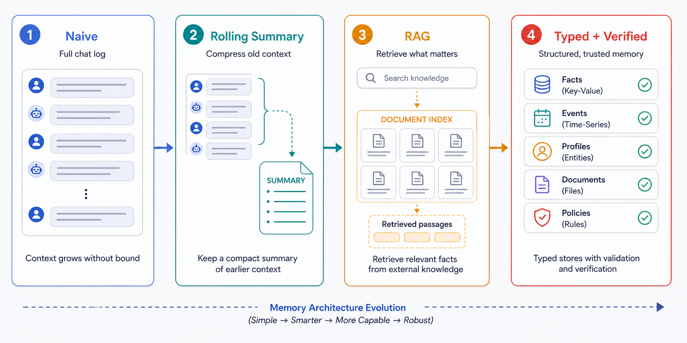
モダンな記憶圧縮保存種類別の記憶と検証付き書き込み
モダンな記憶圧縮保存は、会話を一つの長文へ圧縮するのではなく、将来必要な情報だけを種類別に抽出し、検索可能かつ監査可能な形で保存する方式である。現在のコンテキストは、最新数ターン、Rolling Summary、今回必要なMemory、現在のTask Stateから構成する。
| 記憶種別 | 例 |
|---|---|
| Working memory | 現在のIssue、未完了作業 |
| Episodic memory | 先週の障害対応、会議の決定 |
| Semantic memory | ユーザーの役職、プロジェクト構成 |
| Procedural memory | コーディング規約、承認フロー |
| Artifact memory | ソースコード、資料、分析結果 |
保存時には、全発言をそのまま「記憶」としない。Memory Writerが、将来も必要か、事実か推測か、有効期限はあるか、誰の記憶か、どのprojectか、機密区分は何か、元情報はどのMessageかを判定する。
# memory record（最低限のスキーマ）
tenant_id, user_id, project_id, memory_type, content,
source_message_id, created_at, valid_from, expires_at,
confidence, sensitivity, version
数値や設定は構造化DBへ置き、類似検索が必要な文書や事例はSemantic Indexへ置く。大きな成果物はArtifact Storeへ保存し、コンテキストには全文ではなく参照、要約、必要な抜粋を入れる。
ローカルでのモダン実装Context BuilderとMemory Writerの責務
ローカルモデルでモダンな会話記憶を実現するには、保存、検索、コンテキスト構築、推論、記憶更新を独立した処理として実装する必要がある。モデルサーバー単体を起動しても、クローズドサービスの会話体験は自動的には再現されない。
リクエストを受けると、Conversation APIがユーザーとsessionを特定し、Session Storeから現在のタスク状態を取得する。Context Builderは最新Nターン、Rolling Summary、Structured Memory、Semantic Indexの検索結果、Artifactへの参照を選び、トークン予算内へ配置する。このとき、投入候補ごとに重要度、鮮度、信頼度、機密区分、トークン量を評価する。コンテキスト上限まで無条件に詰めるのではなく、ReasoningとVisible Outputのための領域を先に確保する。
モデルが最終回答を返した後、Memory Writerが決定事項、未解決事項、設定変更、成果物を抽出する。抽出内容は、既存値との競合、有効期限、出典、アクセス権を検証してから保存する。モデルが「本番設定を変更した」と書いただけで、実際の設定値を自動更新してはならない。マルチエージェントでは、全Workerへ全履歴を配らない。CoordinatorにはShared task state、Decision log、Artifact index、Worker output summariesを持たせ、Planner、Coder、Verifierには役割に必要なコンテキストだけを渡す。各Workerの数万トークンの調査結果は、結論、根拠、未解決事項、Artifact参照へ圧縮して共有する。
reasoning
精度向上Effortは固定トークン数ではない
Reasoningは、回答前に中間的な検討を生成させることで複雑なタスクの成功率を高める仕組みであり、精度向上と計算量増加を同時に評価する必要がある。Reasoning tokensは画面に表示されない場合でも、モデル内部では通常のDecodeによって生成される。生成総量は、Reasoning tokens + Visible answer tokens + Tool call/format tokens である。
Effortは固定Token Budgetではない。OpenAIではモデルに応じてnone、minimal、low、medium、high、xhighなどがあり、GoogleのThinking LevelやAnthropicのEffortも、問題に応じて使用量が変わるBehavioral Signalである。同じhighでも、簡単な問題と難しい問題でReasoning token数は異なる。したがって「lowは1,000、mediumは4,000、highは16,000」と固定対応させることはできない。Effortを上げるとReasoning量の確率分布が変わると捉え、対象ワークロードで平均、中央値、p95、最大値、成功率を測る必要がある。
| Effort方式 特定ベンチ | 成功率 | Token消費 |
|---|---|---|
| 常時Low | 35.0% | 25K |
| 常時Medium | 47.3% | 137K |
| 常時High | 54.8% | 1,007K |
| Ares動的選択 | 58.5% | 476K |
添付資料の2026年Ares研究（gpt-oss-20b／TAU-Bench Retail）では、上表のとおり、常時HighはLowの約40倍・Mediumの約7.4倍のトークンを使用した。Aresは各Agent StepでEffortを動的選択し、High固定比でReasoning tokensを最大52.7%削減しながら成功率を維持または改善した。これは特定モデルとAgent評価の集計値であり、すべてのモデルで40倍になるという意味ではない。示唆は、モデル選択だけでなくReasoning EffortもRouterの制御対象にすべきという点にある。
生成tok/secと体感速度非表示Reasoningも待ち時間になる
Reasoningが体感速度へ与える影響は、表示回答の長さではなく、表示前に生成した全トークン数で決まるため重要である。総応答時間は概ね Queue + Prefill +（Reasoning + Visible）÷ Decode tok/sec + Tool時間 となる。Reasoningを最終回答より前に非表示で生成する場合、最初の表示文字までの時間は Queue + Prefill + Reasoning tokens ÷ tok/sec に近づく。UIでReasoningを隠しても、計算が消えるわけではない。
| Reasoning | 総生成 | なし比 | 完了(50tok/s) | 追加KV |
|---|---|---|---|---|
| 0 | 500 | 1.00× | 10秒 | 0 |
| 1,024 | 1,524 | 3.05× | 30.5秒 | 0.25 GiB |
| 4,096 | 4,596 | 9.19× | 1分32秒 | 1 GiB |
| 16,384 | 16,884 | 33.8× | 5分38秒 | 4 GiB |
| 25,000 | 25,500 | 51× | 8分30秒 | 約6.1 GiB |
概算 Qwen3-32B相当・Visible 500・50tok/s・KV 256KiB/token。単一例 OpenAI公式例 Reasoning 1,024＋Visible 約162（約7.3×）、Gemini公式例 Thought 297＋Visible 171（約2.74×）。
4,096 Reasoning tokensと500 Visible tokensを生成する場合、7tok/secでは最初の回答まで約9分45秒・完了まで約10分57秒、50tok/secでは約1分22秒・約1分32秒、1,000tok/secでは約4.1秒・約4.6秒となる。500トークンだけなら50tok/secと1,000tok/secの差は10秒対0.5秒だが、4,096 Reasoningを加えると約92秒対約4.6秒になる。通常の短い回答以上に、Reasoningやマルチエージェントでは高速Decodeの価値が大きい。
reasoning と コンテキスト出力用領域を先に確保する
Reasoningとコンテキストサイズの関係は、内部思考もコンテキスト上限を消費し、最終回答を出す前に上限へ到達し得る点にある。基本制約は Input + Reasoning + Visible Output + Tool Result ≤ Context Window である。40,960トークンのモデルへ、入力32,000、Reasoning 8,000、Visible Output 1,000を要求すると、合計41,000となり上限を超える。
上限を超えると、Reasoning途中で終了する、Visible Answerが出る前に停止する、回答が短くなる、後続のTool結果を投入できないといった問題が起こる。添付資料では、OpenAIはReasoningモデルの検証開始時に、Reasoningと回答用として最低25,000トークン程度を確保することを推奨している。Productionでは、Context Builderが入力を作る前に、Visible Output、Reasoning、Tool Resultの予約枠を確保する。計測では、input_tokens、reasoning_tokens、visible_output_tokens、tool_tokens、total_generated_tokensを分け、TTFT_any、TTFV、decode_tok/s_all、visible_tok/s、peak_KV_bytesを記録する。
reasoning と 記憶Raw Reasoningを長期記憶にしない
Reasoningと記憶の関係では、生成中の思考列をそのまま次回の会話履歴へ残さないことが重要である。Reasoning tokensは現在の問題を解くための作業中の状態であり、将来参照すべき確定事実とは限らない。ローカルモデルが生成した <think>...</think> をそのまま次回へ再送すると、入力コンテキスト、Prefill時間、KVキャッシュが増える。また、途中で棄却した案や誤った推測が残り、次の推論が古い思考へ引きずられる可能性がある。
Raw Reasoningには、機密情報、内部パス、未確認の推測、Tool利用前の仮説が含まれる場合もある。これを長期DBへ保存すると、アクセス制御、削除、監査の対象が不必要に広がる。Productionでは、Raw Reasoningは現在の推論中だけ保持するか、必要な場合に限って短期監査ログへ置く。次ターンへ渡すのは、最終回答、Tool callと結果、確定した決定事項、未解決事項、短いReasoning Summaryである。Reasoning Summaryも事実の正本にはしない。ReasoningはKVキャッシュと同じく作業中の記憶であり、長期会話記憶の正本とは分離する。
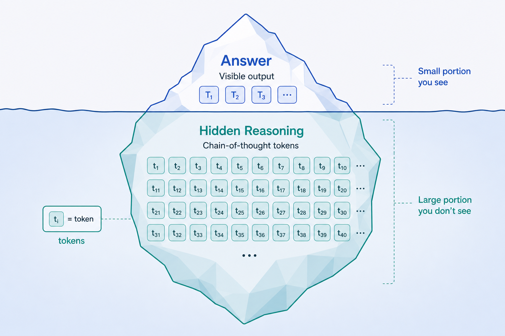
GLM-5.2 / Kimi-2.7 / Opus-4.8
非公式ベンチマーク仕様と定性傾向の整理
この比較は、公式の統一ベンチマークではなく、モデル仕様とコミュニティ上の定性的な評価傾向を整理するものであり、数値ランキングとして扱わないことが重要である。特にZ.aiはGLM-5.2について公式ベンチマークを提示せず出荷しており、流通しているスコアは第三者・非公式である。
| 項目 | GLM-5.2 | Kimi K2.7（-Code） | Claude Opus 4.8 |
|---|---|---|---|
| 総パラメータ | 753B 公式 | ~1T（org表記1.1T）公式 | 非公開 |
| アーキ | MoE 256E/8active+shared1、78層 | MoE 384E/8選択+shared1、61層 | 非公開（クローズド） |
| Active/token | ~40B 推定 | ~32B 公式 | 非公開 |
| コンテキスト | 1,048,576 | 262,144 | 既定1M（Foundry 200K）/出力128K |
| 重み公開 | YES（MIT） | YES（Modified MIT） | NO（API専用） |
Kimi K2.7について出荷が確認されているのはエージェント的コーディングに特化したKimi-K2.7-Codeであり、本章で「Kimi K2.7」と書く場合はこのCode版を指す（一般チャット版の単独存在は要検証）。400MのMoonViT視覚エンコーダを内蔵する。Claude Opus 4.8はクローズドでパラメータ・アーキは非公開のため、推測値で比較してはならない。2026年5月28日にGA、fast modeはresearch preview、effort既定はhighである。
非公式な傾向では、コーディングでGLM-5.2はプランニングとワンショット生成が強め、Kimi-K2.7-Codeは自律的な長期タスクとバグ修正が強めと評価される。推論・汎用ではGLM-5.2を総合的に上とする評価が多い。性能天井については、コミュニティではOpus 4.8やGPT-5.5を最上位とし、最難問ではオープン2モデルが完全には届かないという評価がある。いずれも非公式・定性的で、統一Harness・同一Effort・同一Tool・同一トークン予算による数値比較ではない。
搭載構成全重み常駐を前提にする
GLM-5.2とKimi K2.7の搭載構成を考える際は、Active parametersではなく、全Expertを含む総重みがGPUメモリへ常駐することを前提にする必要がある。以下のVRAMと費用は、2026年6月時点の推定または二次情報であり、発注前に要検証である。推定式は 必要VRAM ≈ パラメータ数 × bytes/parameter × オーバーヘッド1.2〜1.3倍（FP8≈1byte/param、4bit≈0.5byte/param）。
| モデル | quant | 必要VRAM(推定) | 必要GPU | 8GPUノード |
|---|---|---|---|---|
| GLM-5.2 753B | FP8 | ~941 GB | 12×H100 / 7×H200 | 2×(8×H100) or 1×(8×H200) |
| GLM-5.2 | 4bit | ~470 GB | 6×H100 / 4×H200 | 1ノード |
| Kimi K2.7 1T | FP8 | ~1,250 GB | 16×H100 / 9×H200 | 2ノード |
| Kimi K2.7 | 4bit | ~625 GB | 8×H100 / 5×H200 | 1ノード |
推定 重みを格納できる構成の概算。KV・Runtime・通信・断片化は別途。特にKimi 4bitを8×H100へ置く構成は余裕が小さく本番適合性は要検証。
Claude Opus 4.8はオープンウェイトではないためセルフホストできない。ブリーフ記載のAPI価格は入力1Mトークン当たり5.00ドル、出力1Mトークン当たり25.00ドル（Batchは50%割引、Prompt Cache readは通常入力の約0.1倍）だが、価格は要ライブ確認である。参考として、GLM-5.2のホスト型APIには入力1M当たり約1.40ドル、出力約4.40ドルという二次情報がある。低利用率ではセルフホストよりベンダーAPIの方が大幅に安くなる可能性を示す。
ユーザー1人低同時実行で専有ノードを持つ非効率
ユーザー1人の構成では、必要GPU数が利用者数に比例して小さくならない点が最大の問題である。MoEの全重みを常駐させる必要があるため、1人しか使わなくてもGLM-5.2またはKimi K2.7の4bit構成には8×H100級のノードをほぼ丸ごと確保する。以下のクラウド費用は、8×H100ノードを月730時間オンデマンドで稼働させる前提による2026年6月時点の概算であり、予約割引・Spot・起動停止・転送・ストレージ・税・地域差を含まない。
| クラウド（8×H100/ノード） | 時間単価(推定) | 月額/1ノード(推定) |
|---|---|---|
| AWS p5.48xlarge | $55〜98.3 | ~$40k〜72k |
| GCP a3-highgpu-8g | ~$88 | ~$64k |
| Azure ND H100 v5 | ~$98.3 | ~$72k |
| 自社購入＋DC（3年償却） | — | ~$13k |
推定 4bitで1ノードに収める最小案。FP8はH100で両モデルとも2ノード必要。自社購入は capex ~$250k〜350k＋colo/電力 ~$3k〜6k/月を3年償却した概算で、サーバ価格・coloレートは要検証。
一人が常時利用するわけでなければ、24時間専有は特に非効率である。Spot、利用時だけの起動、自動停止、ホスト型APIの方が合理的になりやすい。月4万〜7.2万ドルを正当化するには、データ所在・独自改造・オフライン・一定以上の高稼働率など、価格以外の要件が必要になる。自社購入はクラウドより月額換算は低いが、低稼働率では設備が遊休し、調達期間・代替機・保守・人員も自社責任となる。
ユーザー100人同時実行・KV・Replicaを含む本番構成
ユーザー100人の構成では、登録人数ではなく、ピーク同時生成数、平均コンテキスト、Reasoning量、出力長、SLOを前提にノード数を決める必要がある。100人全員が同時に1Mコンテキストを利用できるという意味ではない。ブリーフの本番シナリオは、FP8、KVの余裕、Replicaを考慮し、各モデルについておおむね2ノードを下限側、3〜4ノードを余裕側としている。
| クラウド | 2ノード/月 | 3ノード/月 | 4ノード/月 |
|---|---|---|---|
| AWS | ~$8万〜14.4万 | ~$12万〜21.6万 | ~$16万〜28.8万 |
| GCP | ~$12.8万 | ~$19.2万 | ~$25.6万 |
| Azure | ~$14.4万 | ~$21.6万 | ~$28.8万 |
| 自社購入(償却) | ~$2.5万〜2.6万 | — | — |
推定 2026年6月・オンデマンド730h・GPUノード費のみ（ストレージ/転送/LB/監視/サポート別）。GLM-5.2 FP8=12×H100、Kimi FP8=16×H100で、2ノードは重み配置の下限側。自社購入は定常24/7利用ならクラウドの約3〜5倍安いが、一台停止時のサービス維持には追加設備が必要。
100人という人数だけから処理能力は保証できない。平均コンテキストが8Kか128Kか、Reasoningが0か数千トークンかで、KV容量とリクエスト滞在時間が大きく変わる。負荷試験では、User tok/sec、TTFV、Queue p95、Aggregate tok/sec、peak KV、OOM率、タスク成功率を測る。
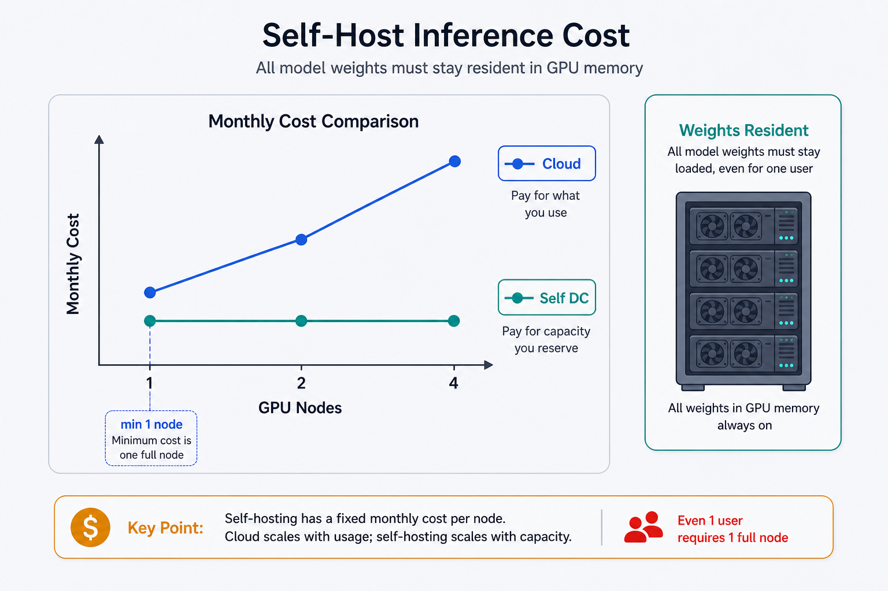
Fugu と Fusion
Fugu論文オーケストレーションを学習するモデル
Fuguの技術的な位置づけは、単一モデルへ固定されたプロンプト手順を与えるのではなく、問題に応じたマルチエージェント構成そのものをモデルに学習させる点にある。公式概要は sakana.ai/fugu-release、Technical ReportはarXiv 2606.21228として示されている。関連するTrinityはarXiv 2512.04695、ConductorはarXiv 2512.04388で、Conductorは7Bの強化学習済みオーケストレーターとして必要に応じ再帰的にself-callする。
Fuguは利用者から見ると一つのFoundation Model APIとして動く。内部では、一つのモデルが自分で問題を解くか、複数の専門Agentを編成するかをクエリごとに判断し、最終的には一つの回答へ統合する。重要なのは、マルチエージェントの固定Workflowを人間が事前にすべて定義するのではなく、どの足場を作り、どのAgentへ委譲し、どの結果を統合するかを学習対象にしている点である。
新規性Query-adaptive scaffoldの学習
Fuguの新規性は、オーケストレーションを外付けのルールベース処理として扱わず、大規模Fine-tuning、進化的アルゴリズム、強化学習によって最適化する点にある。モデル能力だけでなく、モデルの使い方を学習している。クエリごとに動的なScaffoldを生成するため、常に同じAgent数、同じ順番、同じ専門家を呼ぶわけではない。単純な問いは単独で解き、難しい問いは専門チームへ分解するという選択を、入力に応じて変えられる。
ブリーフでは、障害が発生したProviderを動的に迂回する能力も新規性として挙げられている。これは、特定の実行経路へ固定せず、利用可能な経路から処理を継続する本番上の強みになる。一方、動的Scaffoldは、内部で何Agentが動き、どの経路を通ったかによって遅延が変動し得る。運用では最終回答だけでなく、使用Agent数、再帰深度、Tool回数、総トークン、失敗時の迂回を観測する必要がある。
ルーティングの違い動的編成と固定パネル
FuguとOpenRouter Fusionの最大の違いは、リクエストごとに実行構造を変えるか、固定されたパネル比較を行うかにある。Fusionの公式ページは openrouter.ai/openrouter/fusion である。
| Fugu | Fusion | |
|---|---|---|
| 実行構造 | Query-adaptive・動的scaffold | 固定「パネル並列＋Judge」 |
| 統合 | 1回答へ統合 | マージせず比較（合意/矛盾/盲点をJSON） |
| モデル出所 | 自前（Fugu/Fugu Ultra） | OpenRouter上の他社（Opus/GPT/Gemini） |
| 課金 | fee stack無し（最上位単価1本） | パネル＋Judge合算でスタック |
つまり、Fuguは「問題に合うチーム構成と一つの最終回答を自動生成するAPI」、Fusionは「指定された複数モデルの見解を並べ、合意と相違を明示する比較API」と整理できる。
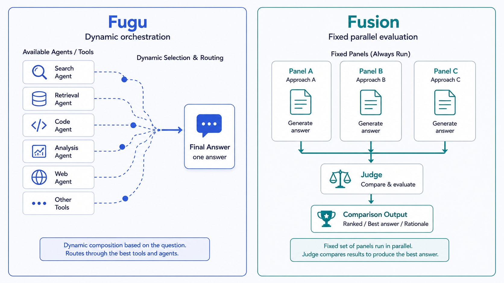
共通点と有利なパターン自動委譲と比較可能性の使い分け
共通点は、単一モデルの一回の回答だけに依存せず、複数の推論経路や専門性を組み合わせ、単一のフロンティアモデルに匹敵または上回る結果を狙う点にある。利用者には一つのAPI入口を提供し、内部の複数呼び出しを隠蔽する。一方、単一モデル呼び出しよりも、総トークン、外部Tool回数、レイテンシ、失敗点が増える。分類・単純検索・定型応答のような低リスク処理へ常時適用するのではなく、失敗コストが高い問いや、単独モデルで検証に失敗したケースへ段階的に使うのが合理的である。
Fuguが有利なのは、利用者がAgent構成を手作業で設計せず、問いに応じた委譲を自動最適化したい場合である。Provider障害の迂回、特定モデルへのロックイン回避、最終回答を一つにまとめることが必要な本番サービスに向き、課金も最上位単価一本のため費用を予測しやすい。Fusionが有利なのは、一つの統合回答よりも各モデルの合意・矛盾・盲点を明示的に確認したい場合で、法務・セキュリティ・重大な設計判断・経営判断など、異論の存在自体が重要な問いに適する。実装上は、通常経路を単一モデルまたはFuguとし、重要判断時だけFusionを起動する構成も考えられる。
コスト計算Fee stackの有無を分ける
FuguとFusionのコスト計算では、内部呼び出しを一つの製品単価で包むか、各パネルとJudgeのAPI料金を合算するかを区別する必要がある。見た目が一つのAPIでも、課金構造は異なる。
| Fugu 料金 公式 | 月額 | 従量(Fugu Ultra /1M) |
|---|---|---|
| Standard | $20 | Input $5 / Output $30 / Cached $0.50 （272K超: $10 / $45 / $1.00） |
| Pro（10×） | $100 | |
| Max（20×） | $200 |
下位プランの具体的トークン上限は非開示（要検証）。公式: console.sakana.ai/pricing
Fusionの料金表示である0ドル/Mは、Fusion機能自体の上乗せ料金がないことを意味し、モデル呼び出し全体が無料という意味ではない。実費は Σパネルモデル費用 + Judge費用 で決まる。デフォルトのQualityパネルはOpus・GPT・Gemini系で構成され、各モデルへ同じ入力を送り、その全出力をJudgeへ入力するため、入力と出力の双方が複数回発生する。ブリーフではデフォルト3モデルで単発呼び出しの約4〜5倍を目安としている（具体倍率は要検証）。レイテンシも、最も遅いパネルの完了時間とJudge処理の和になる。Fusionは全リクエストへ常時適用するより、損失の大きい判断、モデル間の不一致を可視化したい処理、単一モデルのVerifierが失敗した処理に限定する方が費用対効果を管理しやすい。
ハーネスが主役
ハーネスモデルをエージェントへ変える周辺プログラム
ハーネスは、ステートレスなトークン予測器であるLLMを、ファイルを読み、Toolを実行し、結果を検証しながら作業を継続するエージェントへ変える周辺プログラムである。実用上の能力はモデル単体ではなく、モデル、Tool、Context Builder、権限、実行ループの組み合わせで決まる。主要な機能は次の5つである。
- エージェントループ：コンテキストをモデルへ送り、テキストまたはTool callを受け、ハーネスがToolを実行し、結果を次リクエストへ追加。Tool callが止まり最終回答が返るまで反復。
- Tool呼び出し：Shell/Bash・ファイル読取編集・Web・MCPなどの定義を提示し、呼び出しをParseしてローカル/外部で実行、結果を返す。実行するのはモデルではなくハーネス。
- 会話履歴・コンテキスト構築：System Prompt、CLAUDE.md/AGENTS.md、過去ターン、Tool出力、作業ディレクトリを組み立てる。ステートレスAPIでは履歴を保持して毎回再送。
- 権限・承認：自動実行/承認要/禁止を判断し実行前に強制。守る主体はモデルでなくハーネス。
- サンドボックス：実行した処理がどこまでアクセスできるかをOSレベルで制限。承認（実行してよいか）とは別レイヤー。
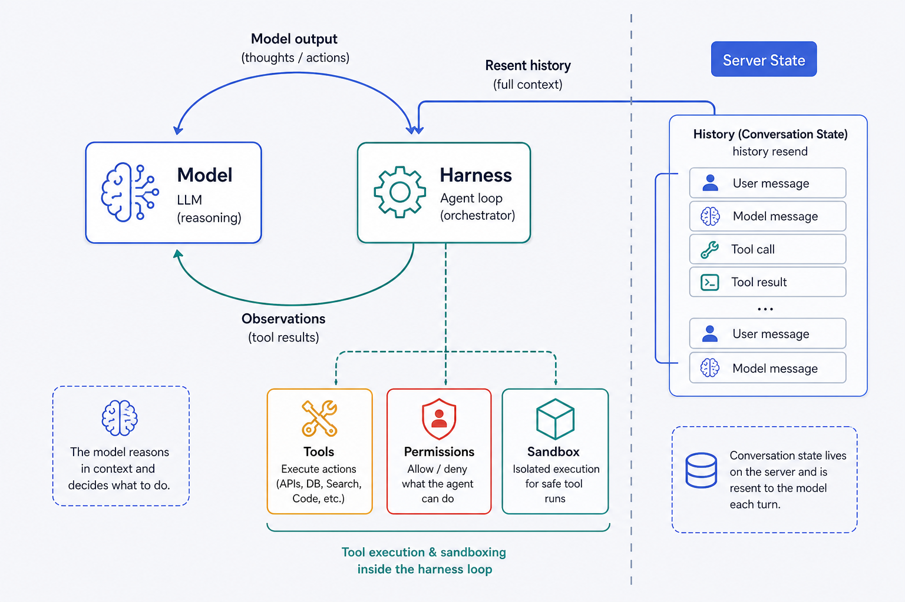
Codex CLIコードから読むハーネスの責務
Codex CLIは、モデルそのものではなく、ローカル環境でAgent loop、Tool実行、権限、サンドボックス、指示ファイルを管理するRust製ハーネスである。公式リポジトリは github.com/openai/codex である。作業ディレクトリとAGENTS.mdなどの指示を読み、モデルへ渡すコンテキストを構築する。モデルがShell実行やファイル変更を要求すると、CLIがポリシーを評価し、許可された環境で操作を実行し、標準出力・標準エラー・変更結果を次のモデル呼び出しへ返す。
設定は ~/.codex/config.toml で管理する。サンドボックスモードには read-only、デフォルトの workspace-write（書込可・ネットワーク既定無効）、danger-full-access がある。承認ポリシーには untrusted、on-request、on-failure、never があり、Auto＝workspace-write＋on-request、Full access＝danger-full-access＋never である。実装上、macOSではSeatbelt、Linux/WSL2ではbubblewrapを利用するとブリーフに記載されている（旧版のLandlock+seccompとの対応は要検証）。重要なのは、モデルが「安全だと思う」と回答しても権限が付与されるわけではない点で、Tool callの実行可否とアクセス範囲はモデル出力の外側にあるCodex CLIが決定する。
ハーネス外のサーバー状態Responses APIが担当する範囲
Responses APIなどのサーバー側状態は、会話履歴の保存と接続を代行する仕組みであり、ローカル作業を実行するハーネスの代替ではない。この区別をしないと、「APIがステートフルならCLIは不要」という誤解が生じる。OpenAI Responses APIは任意にステートフルにでき、store=true がデフォルトである。Responseはサーバー側で30日保持され、previous_response_id を指定すれば新しい入力だけを送って以前の文脈へ接続できる。ただし履歴を再送しなくても、過去の入力トークンが課金から消えるわけではない。
Conversations APIは、30日TTLの対象外となる永続的な会話コンテナを提供する。これは会話Itemの保存と参照を担うが、ローカルの作業ディレクトリ、未保存のファイル変更、Shell process、権限状態、サンドボックス状態まで保持するものではない。Codex CLI側には引き続き、現在のファイル、編集差分、AGENTS.md、Tool定義、承認ポリシー、サンドボックス、Agent loopが必要である。サーバー側状態が置き換えるのは主に「履歴をクライアントが再送する処理」であり、ハーネス全体ではない。Anthropic Messages APIはステートレスであり、Claude Code側が必要な履歴を保持して毎回再送する。このAPI設計の違いがあっても、Tool実行・権限・ファイル編集・コンテキスト選択をクライアント側ハーネスが担う点は共通している。
Claudeアプリ / Claude CodeUIも含めたハーネスとして理解する
Claude CodeやClaudeアプリも、モデルの周囲でコンテキスト、Tool、権限、作業状態を管理するハーネスであり、画面上のチャットUIだけではない。モデルが同じでも、ハーネスのTool設計と権限制御によって実用能力と安全性は変わる。Claude Codeはコードを読み、ファイルを編集し、コマンドを実行するAgentic Toolで、CLAUDE.md・過去の会話・Tool結果・現在の作業内容を組み立て、Anthropic Messages API（ステートレス）へ送る。権限階層には allow、ask、deny があり、deny→ask→allow の順で評価する。実行モードには default、acceptEdits、plan、auto、dontAsk、bypassPermissions がある。Bash実行にはOSサンドボックスも適用され、権限ルールと相補的に働く。